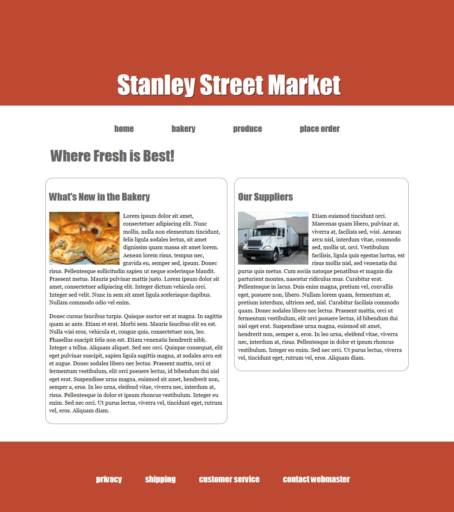
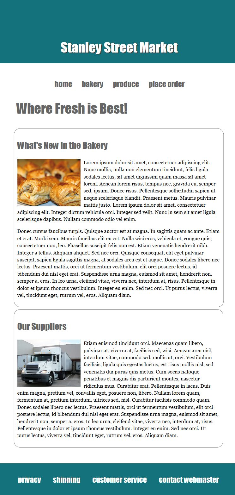
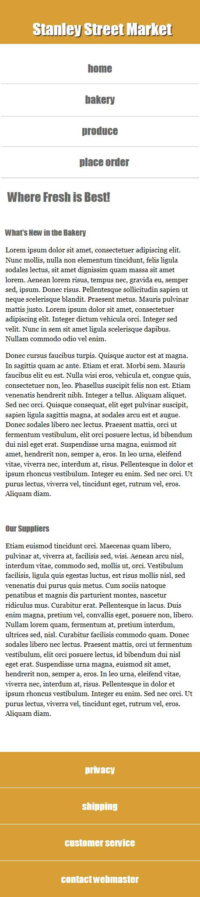

| DETAILS: | Create a responsive layout for small, medium and large screens based on the following screenshots. The html code is created for you. Feel free to modify the code if necessary. You must create the external stylesheet with media queries. Don't forget to set the media attribute in the link tag |
| FONTS: | The font for the headers,and nav links, footers are Impact The font for the body text(content only) is Georgia. Make sure to use a font stack in case the user does not have the Impact or Georgia fonts. Sizes can be approximate. |
| COLORS: | The background color for the large screen header and footer is #BD4932, The background color for the medium screen header and footer is #14727D The background color for the small screen header and footer is #DB9E36. The nav links and the wrap h1 and h2s is #666. There is a #666 text shadow on the header h1. The rounded border around the aside and the section is #666. |
| MEDIA QUERIES: | For the media queries use the following conditions:
medium screen - max-width: 768px, |
| DUE: | Zip ALL your files and upload to the lab 3 dropbox no later than 4:00pm March 25th. |
| MARKS: |
centred layout with wrap div - full screen layout width : 80¬90%(your preference) / medium screen layout widht: 95¬98%(your preference)/ small screen layout width: 100%; choose background color for your body. Set different body tag background color in each screes size(e.g. large screen background: yellow.. mid size : green etc) header styling navigation layout and formatting two column layout and formatting, alignment footer layout and formatting one external css file with no code errors use of two media queries, one for small screen (480px) and one for medium screen (768px) with appropriate styling of the header, wrap and footer in each Make sure to use the inheritence feature of media query. Don't include the common styles that you will use for any screen size again in your media queries. (e.g. Font style is same for all 3 -> only include in your full screen size style.// If you want to set special style in medium size and smaller, then you just need to define it in the medium size) all requirements above are met |


